Working in pairs, the task was to design the axle sub-assembly for an electric cargo bike that could withstand operational
forces while meeting dimensional and material constraints.
Our final design used low alloy Manganese-Molybdenum Steel for
a balance of strength-to-weight ratio and cost. We also implemented a chain drive system with pilot-bored sprockets and pillow-block
roller bearings for robust load support and ease of maintenance and assembly. We received the highest grade in the cohort for this project.
CONCEPT DESIGNS
Starting with rough sketches we gradually incorporated elements from the design brief and research into shaft design to develop a concept we could take into CAD for detailed analysis.
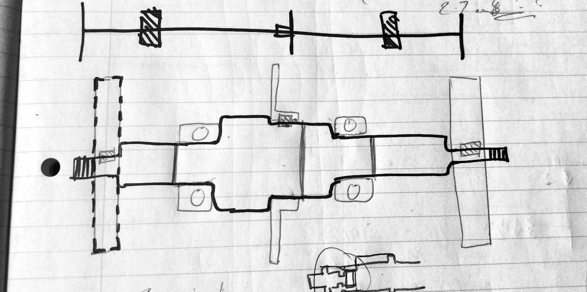
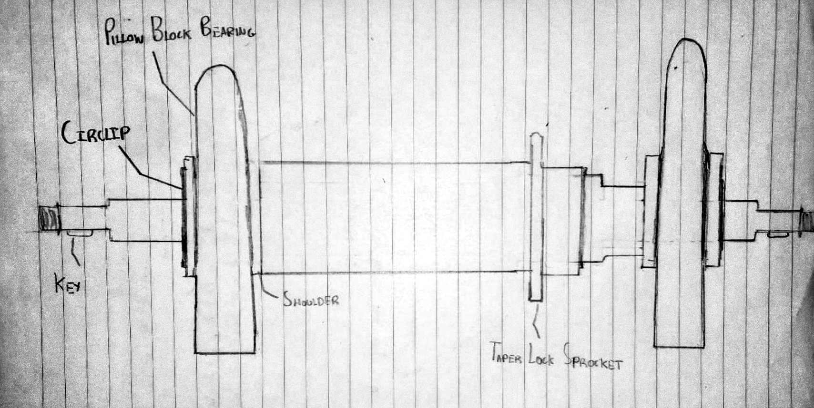
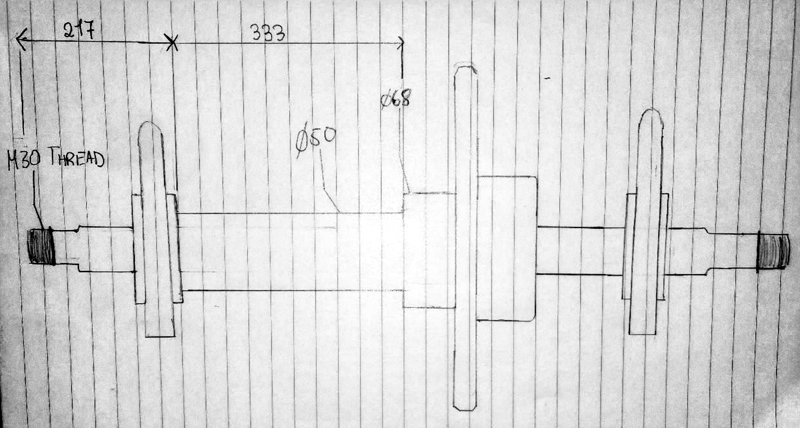
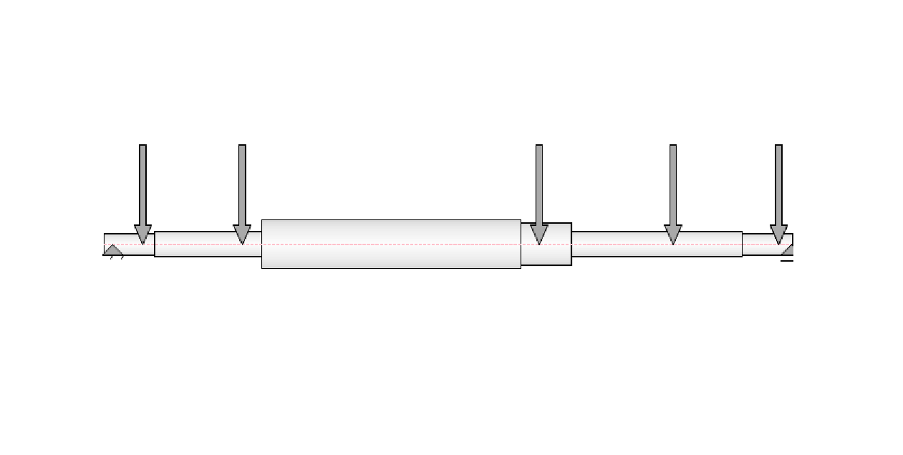
STRESS ANALYSIS AND CALCULATIONS
For each design iteration we ran load analysis to determine the maximum torque and bending loads the shaft would experience during operation, accounting for stress concentrations at keyways, circlip grooves and shoulders. Safety factors were applied throughout to account for real-world variations and unexpected loads.
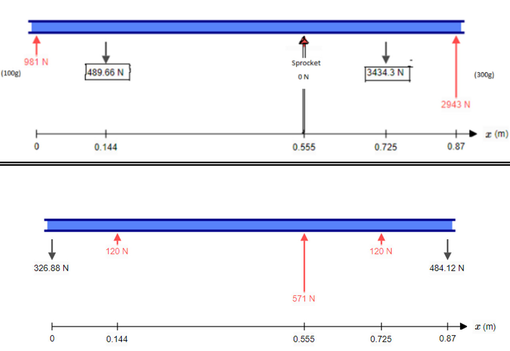
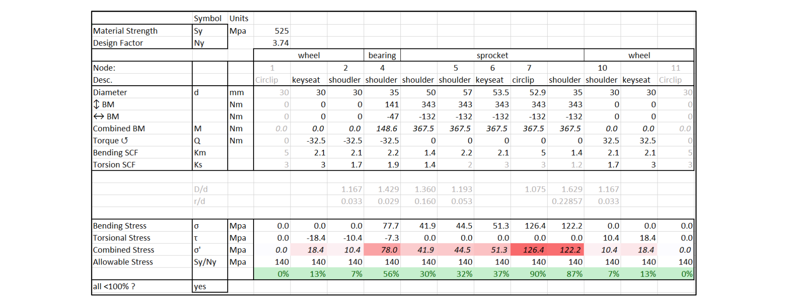
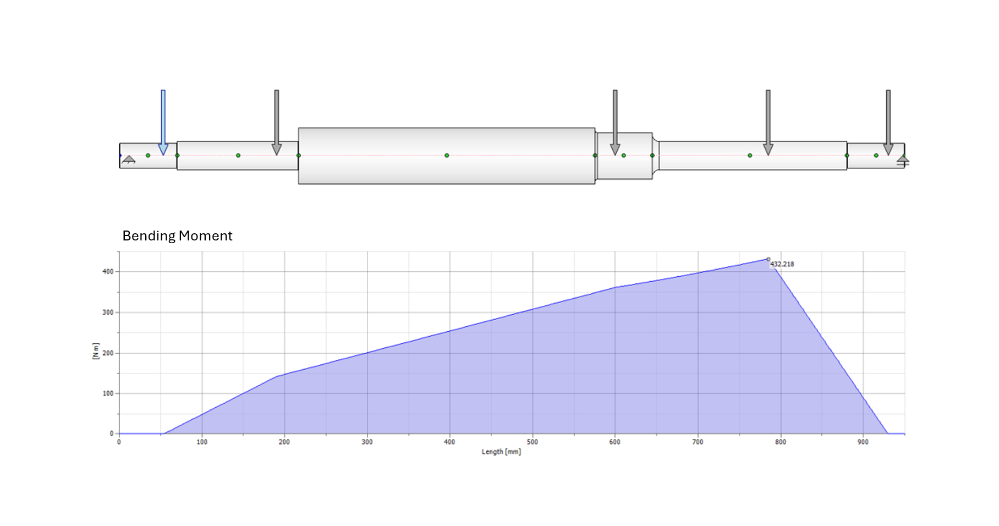
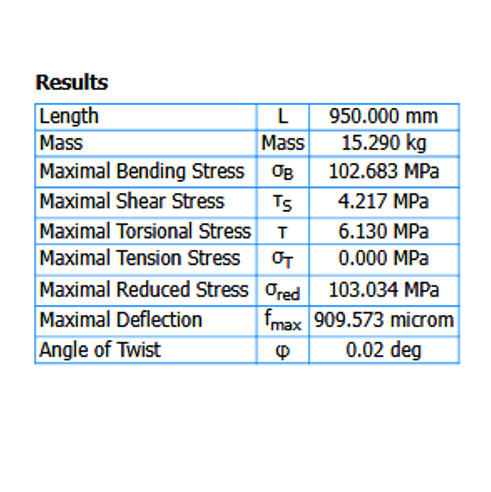
FINAL DESIGN
Once all of the design requirements were met detailed engineering drawings were produced following industry standards (BS 8888) for both the shaft, and the axle sub-assembly.
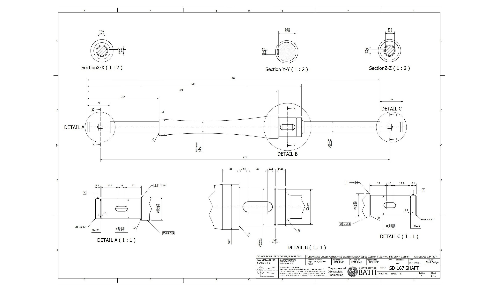
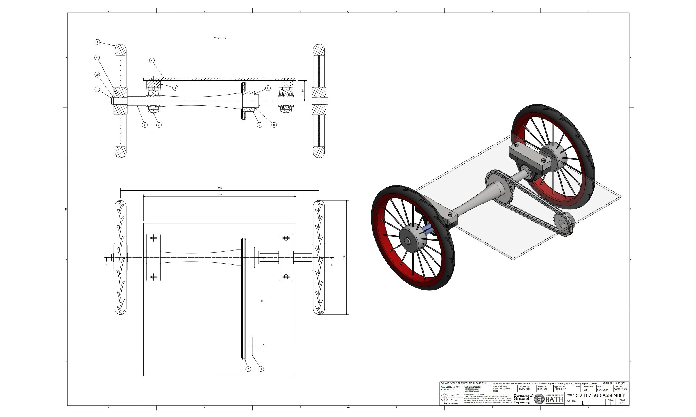
The final design used a tapered mid-section guided by load analysis to limit the shear stress to 50MPa. This reduced the weight by 33% while maintaining safety factors.
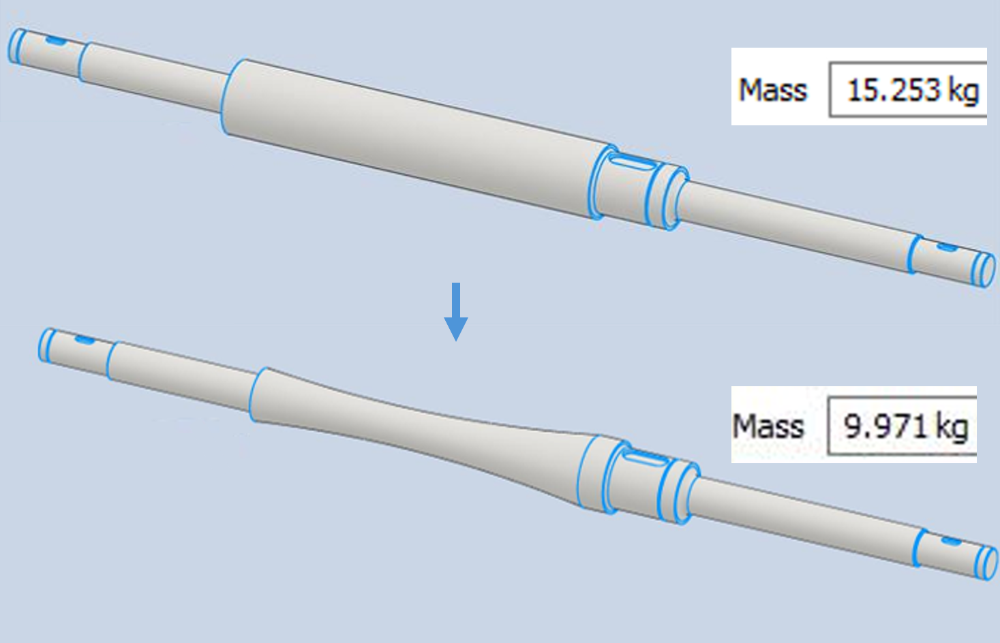
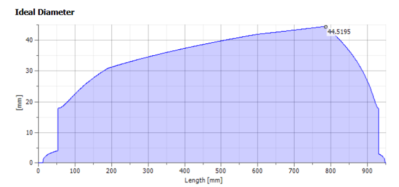
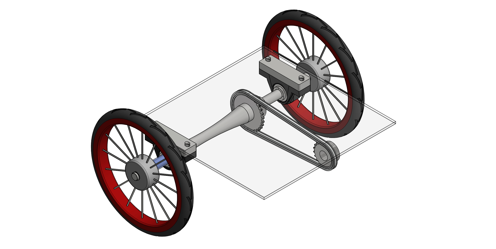